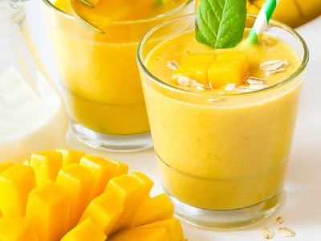

|  |
Smoothie name: Mango smoothie▸ Ingredients:
▸ Time to prepare: 15 minutes ▸ Approx quantity: 1 medium-size cup |
▸ How to make smoothies:
- After choosing to buy delicious mangoes, you use a knife to remove the shell, cut each small piece of mango, remove the mango seeds and limit the cutting
of mango meat close inside the seeds when pressed will be fibrous. Cover some sand sugar on the mango meat, to stimulate a more fragrant mango smoothie.
- You in turn put the ingredients including mango, granulated sugar, condensed milk, fresh milk and ice into this blender and puree it.
- After the finished product is smooth, pour into a glass and garnish with some fresh mango on top to enjoy.
▸ Calories and related information: